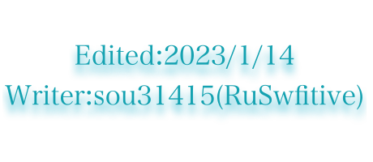

開発言語:Python/Rust
作成中:Rustを用いたLinuxコマンドの再構築,
Webアプリケーションの制作(Rust,Web Assembly,Actix Web)
作成ページ一覧
AES暗号化・復号化ツール情報セキュリティ基礎問題
情報セキュリティ管理問題
情報セキュリティ対策問題
AtCoderメモ
Rust,PythonのGitHubリポジトリ
今まで書いてきた言語
Python,Rust,Swift
結局何の言語を学べばいいのか？
結局はプログラムで何をしたいかで変わるが、書きやすさ、プログラムの映え具合などを考えるとPython。しかし今、わたしはRustを勧めたい。現在C/C++が採用されているシステムにRustが採用されている流れができつつある。
Rustを学ぶ理由
現在Linux KernelではほとんどがC/C++で記述されているが、C言語はメモリ周りのセキュリティが甘く、ポインタ関連の脆弱性がバグのほとんどを占めている。そこで、Unixコマンドをメモリ効率がよく、脆弱性が少ないRustで記述、構築していくことでより安全なシステムの構築を目指す。また同時に、Rustを使ってOSを作ることも視野に入れている。Rustで記述することにより、今まで以上にメモリ効率がよく、脆弱性のないOSを開発していきたいと考える。
Rustで何ができるのか？
全部です。Pythonの強みである機械学習、Java,Kotlin,Swift,Dartの強みであるモバイルアプリ開発、C/C++で使われる場合がほとんどのOS開発など、ほぼなんでもできます。あなたもRustをやりましょう。